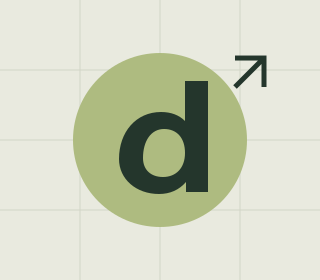

HTML
Semantic structure.
A solid foundation.
CURIOUS MIND. HANDS-ON BUILDER.
Hi, I’m Deviskido. I’m learning, experimenting, and turning ideas into thoughtful things for the web.
Currently exploring the web
01 / ABOUT

I enjoy the space where a good idea becomes something you can actually use. This portfolio is my place to share that process.
Right now, I’m building a strong foundation in HTML, CSS, and JavaScript: understanding how interfaces work, making them adapt to every screen, and connecting them to real data.
02 / TOOLKIT
A small toolkit, with plenty of possibilities.
Semantic structure.
A solid foundation.
Responsive layouts.
Details that feel right.
Interactive experiences.
Ideas brought to life.
Small improvements.
A history of progress.
03 / SELECTED WORK
Experiments, learning projects, and things I’m building. Pulled live from GitHub.
04 / SAY HELLO
Have an idea, a question, or something interesting to share? Leave a note.
Find me on GitHub ↗